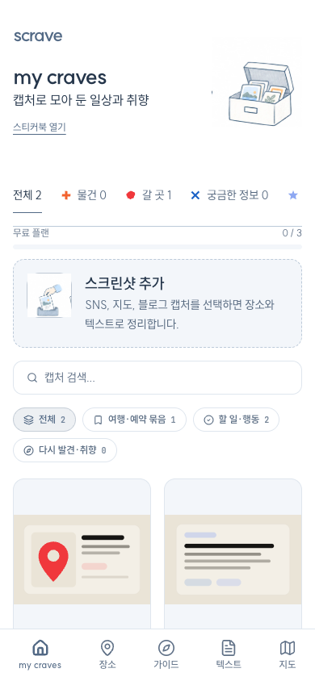
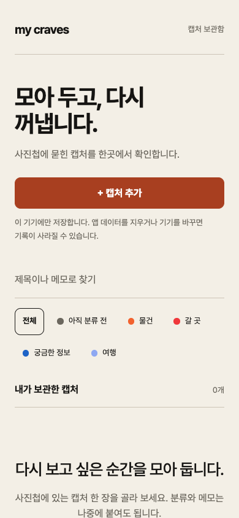
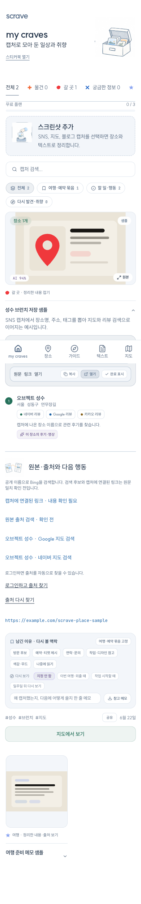
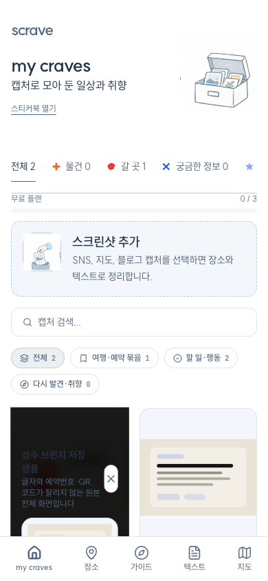
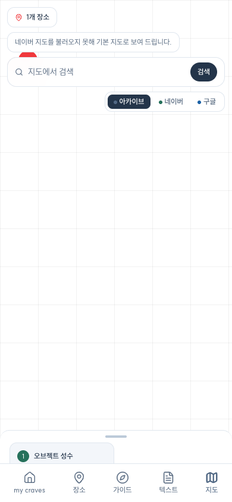
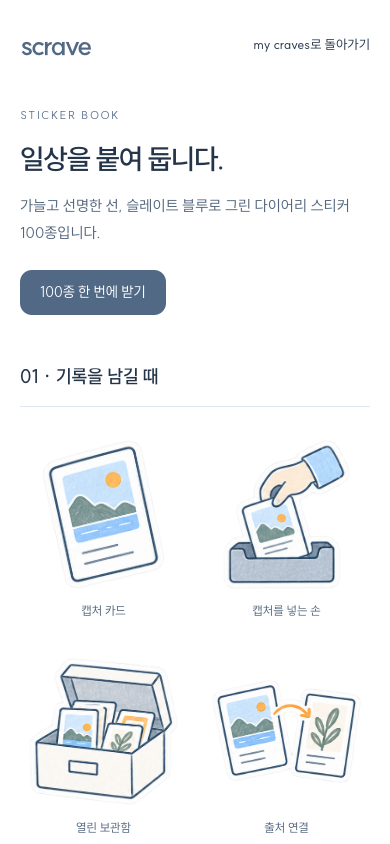

원본 확대 오류를 먼저 고쳐야 합니다.
확대 창이 화면 전체를 덮지 못하고 카드 안에서 잘립니다. 카드의 scale 스타일을 임시로 제거하자 창이 390×844 전체로 돌아왔습니다. 원인 확인만 했으며 운영 코드는 그대로입니다.
SCRAVE / 2026.10.30
운영 웹, 최신 모바일 소스, 토스 시제품을 비교했습니다. 실제 계정과 휴대폰에서 확인하지 못한 동작은 아래에 따로 표시했습니다.
최신 기준: 10월 29일 흰 바탕·슬레이트 블루·SUIT·손그림 / 소스 d5f31fd / 제품명 Scrave·보관함 my craves
두 화면은 모두 390×844 크기로 캡처했습니다. 운영 화면은 비로그인 샘플 2개이고 시제품은 비어 있는 보관함입니다. 그림을 누르면 원래 크기로 열립니다.
흰 바탕·슬레이트·SUIT·분류별 도형·손그림입니다.

크림 바탕·코럴·수동 분류·기기 저장을 사용합니다.

확대 창이 화면 전체를 덮지 못하고 카드 안에서 잘립니다. 카드의 scale 스타일을 임시로 제거하자 창이 390×844 전체로 돌아왔습니다. 원인 확인만 했으며 운영 코드는 그대로입니다.
토스 시제품은 이전 색·서체·소개 화면을 사용하며 분류 표시도 모두 원입니다. 흰 바탕·슬레이트·SUIT·분류별 도형으로 맞춰야 합니다.
운영 모바일에서 첫 제목이 화면 아래에 있습니다. 상단 여백과 두 종류의 필터를 정리하고, 30px 보기 필터·23px 원본 버튼의 터치 영역을 확인해야 합니다.
전체 프레임 보기와 원본 파일 보존은 다릅니다. 웹 업로드는 JPEG로 바꾸며 폭을 줄일 수 있고, 토스 시제품 기록은 이 기기에만 남습니다.
앞의 항목은 화면·소스에서 확인했습니다. 배치 개선은 제안이며 앱 코드를 이번에 바꾸지 않았습니다.




네이티브 앱의 실제 화면은 이번에 촬영하지 않았습니다. 모바일 소스와 iOS 번들 생성 기록을 휴대폰 실행 성공으로 세지 않습니다.
웹·모바일의 기능 코드를 읽고 화면과 검사 결과를 대조했습니다. ‘코드’라고 쓴 항목은 소스를 확인했으며 실제 기기에서 추가 시험해야 합니다. 토스 열은 현재 시제품 기준입니다.
| 기능 | 웹 | 모바일 소스 | 토스 시제품 | 차이와 남은 검증 |
|---|---|---|---|---|
| 사진 선택 | 드롭·붙여넣기·파일 선택 | 앨범 선택 코드 | 한 장 선택·취소 처리 | 토스 앨범과 권한은 기기에서 확인해야 합니다. |
| 여러 장 추가 | 한 번에 최대 10장 | 홈은 한 장 선택 | 한 장만 지원 | 여러 장 분석과 부분 실패 복구가 토스에 없습니다. |
| 자동 분석·분류 | 장소·텍스트·제목·요약·태그·신뢰도 | 서버 분석 연결 코드 | 수동 제목·분류·메모 | 토스 시제품에는 AI 분석 연결이 없습니다. 유료 분석은 이번에 호출하지 않았습니다. |
| 보관함·검색 | 사진 카드·검색·분류·네 가지 보기 | 2열·검색·분류 코드 | 2열·제목/메모 검색·분류 | 웹의 여행·할 일·취향 보기는 토스에 없습니다. |
| 원본 보기 | 확대 창에 잘림 오류 재현 | 전체 프레임 이미지 코드 | 편집 화면에서 전체 프레임 | 전체 프레임 표시와 원본 파일 보존을 구분해야 합니다. |
| 클라우드 저장 | 로그인 후 이미지·기록 서버 저장 | 서버 저장·동기화 코드 | 이 기기의 IndexedDB 저장 | 기기 변경·앱 데이터 삭제에 대한 복구 방법이 다릅니다. |
| 비로그인 체험 | 샘플 2개·최대 3개·로그인 이전 | 비로그인/로컬 기록 코드 | 계정 없는 로컬 저장 | 체험 한도와 로그인 전환 흐름이 서로 다릅니다. |
| 출처 확인 | 연결 링크·검색 후보·일치 상태 | 출처 패널 코드 | 없음 | 운영 비로그인 화면은 로그인 안내를 표시했습니다. 후보를 확정 출처로 표시하지 않습니다. |
| 전화·일정·다음 행동 | 전화·일정·주소·링크·복사·완료 표시 | 장소 링크·텍스트 복사; 웹과 차이 | 없음 | 웹의 행동 추출·완료 표시를 모바일과 토스에서 별도 대조해야 합니다. |
| 이유·다시 볼 시점 | 선택 이유·메모·다시 보기·여행 묶음 | 동일 화면 연결 미확인 | 일반 메모만 | 웹 부가 기록은 로컬 저장이므로 계정 동기화와 구분합니다. |
| 장소·지도 | 장소 목록·지도·지도 서비스 선택 | 장소 탭·지도 코드 | 없음 | 네이버 인증 실패 후 기본 지도로 바뀌는 것을 운영 화면에서 확인했습니다. |
| 후기·영상 찾기 | 후기 후보·검색·필터 | 후기·빠른 검색 코드 | 없음 | 실제 검색 품질과 광고·음성 필터 정확도는 이번 검사에서 확인하지 않았습니다. |
| 동선 가이드 | 2~10장 선택·초안·편집·저장 | 가이드 초안 연결 코드 | 없음 | 운영 목록은 로그인으로 이동했습니다. 실제 생성·저장은 미검증입니다. |
| 가이드 공유 | 비공개/링크 공개·공개 페이지 | 공유 연결 코드 | 없음 | 원본 사진 제외와 공개 범위의 실제 계정별 검증이 남았습니다. |
| 로그인·계정 | Google·카카오·설정 | 소셜 인증 코드 | 없음 | 토스 로그인 연결은 별도 설계가 필요합니다. 실제 로그인은 실행하지 않았습니다. |
| 수정·삭제·한도 | 재분류·삭제·무료 100개·가이드 20개 | 재분류·삭제·한도 코드 | 분류/메모 수정; 삭제 없음 | 삭제·용량 한도·오류 복구를 토스 범위에서 결정해야 합니다. |
| 오프라인 재열람 | 캐시/세션에 따른 범위; 보장 미검증 | SQLite 로컬 기록 코드 | 현재 브라우저 재열람 확인 | 앱 종료·재설치·네트워크 단절·실기기 데이터 수명 검증이 남았습니다. |
| 손그림·스티커북 | 손그림·100종 PNG·ZIP | 그림 8종 연결; 스티커북 화면 미확인 | 없음 | 웹 스티커북의 100개 링크를 확인했습니다. 다운로드 파일 검사는 이번에 반복하지 않았습니다. |
기존 실호출 검사 3개는 조건을 켜지 않아 실행하지 않았습니다. 자동 검사는 실제 계정·기기 시험을 대신하지 않습니다.
지도 안의 HTML에는 검정·초록과 확대 제한이 남아 있습니다. 최신 디자인과의 차이는 소스로 확인했으며 실제 기기 화면은 미검증입니다.
기본 분석기는 서버 방식이지만 모바일 설정과 분석 코드에 키를 단말로 넘기는 대체 경로가 있습니다. 기존 배포본에 실제 키가 포함됐는지는 판정하지 않았습니다. 출시 전에 빌드 설정을 확인해야 합니다.
현재 운영 화면은 슬레이트 디자인 소스 d5f31fd와 일치합니다. 원격 main 6c5322c만 보고 가져오면 이전 크림색 기준을 사용할 수 있습니다. 원본 작업 폴더와 다른 세션의 변경은 보존했습니다.